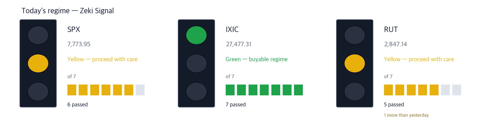

Dow 51,268 +0.18% | Nasdaq Comp. 27,477 +1.05% | S&P 500 7,774 +0.66% | Russell 2000 2,847 +0.50% | 10-yr Treasury 5.31% | Zeki Signal Yellow |

Green favours buying, yellow says wait, red says hold off. The cells count how many of seven conditions are met - more cells mean the advance is broader. This signal uses the October 5 close. The Nasdaq Composite meets all seven conditions and is green. The S&P 500 meets six and is yellow. The Russell 2000 meets five, one more than on October 2, and is now yellow. The three indexes combined read yellow.
Wait — the stance the signal implies.
On October 5 the Nasdaq Composite rose 1.05% to 27,477.31, a record close. The S&P 500 gained 0.66% and the Dow 0.18%. (IBD)
The same day the 10-year yield touched its highest level in 24 years during the session and closed at 5.31%. Bond prices fell around the world, yet the AI-investment boom did not let up. (The Wall Street Journal, IBD)
Real estate took the first hit from rates. Buyers of office and other commercial buildings are pressing sellers to reopen agreed prices, and some say they will drop the deals otherwise. (The Wall Street Journal)
In Brazil, right-wing candidate Flavio Bolsonaro won 47% in the first round of the presidential vote, beating the polls, and Brazilian stocks surged in U.S. trading. (IBD)
① After the 8:30am ET trade data, watch whether the 10-year yield climbs further. On October 5 the Nasdaq rose even as yields rose. If yields climb further, chip stocks near their highs wobble first. (IBD)
② Brazilian broker XP rose 30.93% in one day. It closed just under its one-year high of $29.00. It sits 35% above its 21-day exponential average, so chasing it carries real risk. The runoff is on October 25. (IBD, The Wall Street Journal)
③ TSMC cleared its entry line and closed at $485.80. Its third-quarter results come in mid-October. The first test is whether it holds that line at the close. (IBD)
One number - the 10-year yield at 5.31%. Services kept growing in September, but more slowly. The ISM services index came in at 54.9, just under the 55 expected. Fuel costs were the worry respondents cited most. (IBD)
| Date | What to watch | What it changes |
|---|---|---|
| Tue Oct. 6, 8:30 ET | U.S. trade in goods and services (August) | Imports by country and product. Strong spending should show up as higher imports |
| Wed Oct. 7, 2pm ET | FOMC minutes (Sept. 15-16 meeting) | The meeting that delivered the first hike since 2023. Shows how hard members leaned toward one more; Treasury yields move first |
| Fri Oct. 9, pre-open | Delta Air Lines third-quarter results | The first big report of earnings season. Shows how much of the fuel bill reached fares |
Flavio Bolsonaro, son of the former president, won 47% to President Lula's 45%, a wider gap than the polls showed. The runoff is on October 25. (IBD, The Wall Street Journal)
A Bolsonaro win raises hopes of market-friendly reforms and lower interest rates. The U.S.-listed Brazil stock ETF (EWZ) rose more than 13%. (IBD)
| Close | Day | Week | 20 sessions |
|---|---|---|---|
| $28.15 | +30.93% | +39.15% | +41.74% |
| 3 months | Zeki Strength | Zeki Flow | From high |
|---|---|---|---|
| +76.27% | 92 | A | -2.9% |
| Who | XP, Brazil's largest independent brokerage and asset manager. |
| What | It rose 30.93% on Oct. 5 to $28.15, 2.9% below its one-year high of $29.00. |
| When | Oct. 5, the first session after the first-round result. |
| Where | Listed on Nasdaq. |
| Why | Lower rates and a stronger stock market lift both trading fees and assets under management. |
| How | It rose on volume 7.89 times the 50-day average. It sits 35% above its 21-day exponential average of $20.85. |
Verdict - All four met. Zeki Strength 92, up 41.7% over 20 sessions. Zeki Flow is A over both 3 months and 2 weeks. After a one-day jump, though, the price can swing.
Confirmation - A close above the one-year high of $29.00.
Would be wrong if - A close below $25.90, 8% under the Oct. 5 close.
On the day the 10-year hit a 24-year high, the Nasdaq set a record. Bonds are selling off worldwide, and AI spending is still pulling stocks up. (The Wall Street Journal)
TSMC cleared its entry line ahead of its results. Its earnings are expected to grow 61% this year. Its customers include Nvidia, AMD and Broadcom. (IBD)
| Close | Day | Week | 20 sessions |
|---|---|---|---|
| $485.80 | +2.75% | +7.27% | +13.26% |
| 3 months | Zeki Strength | Zeki Flow | From high |
|---|---|---|---|
| +12.31% | 84 | B | -0.3% |
| Who | TSMC, the world's largest contract chipmaker. |
| What | It rose 2.75% on Oct. 5 to $485.80, above its $479 entry line. |
| When | As of the Oct. 5 close. Third-quarter results come in mid-October. |
| Where | Depositary shares listed on the New York Stock Exchange. |
| Why | Most companies that design AI chips have them made in its plants. |
| How | It sits 0.3% below its one-year high. Volume was 1.02 times the 50-day average. |
Verdict - Three of four met. But Zeki Strength is 84, short of the 90 bar. Zeki Flow is B over 3 months and A over 2 weeks.
Confirmation - Closes that stay above the entry line it cleared on Oct. 5, with Zeki Strength rising above 90.
Would be wrong if - A close back below the $479 entry line it cleared on Oct. 5.
| Close | Day | Week | 20 sessions |
|---|---|---|---|
| $631.75 | -0.34% | +3.93% | +32.28% |
| 3 months | Zeki Strength | Zeki Flow | From high |
|---|---|---|---|
| +22.41% | 97 | B | -2.1% |
| Who | AMD, which designs AI chips and processors for servers. |
| What | It rose 32.28% over 20 sessions to $631.75. |
| When | It fell 0.34% on Oct. 5. |
| Where | Listed on Nasdaq. |
| Why | It is a major TSMC customer. As AI server spending continues, orders for its chips grow too. |
| How | It sits 2.1% below its one-year high. Volume on Oct. 5 was light at 0.6 times the 50-day average. |
Verdict - All four met. Zeki Strength 97, up 32.3% over 20 sessions. Zeki Flow is B over 3 months and A over 2 weeks.
Confirmation - A close above the one-year high of $645.46.
Would be wrong if - A close below the 21-day exponential average of $579.23.
GE HealthCare agreed to buy Sofie, which makes radioactive drugs used in medical imaging, for nearly $1 billion, $945 million in cash. It is the company's fastest-growing business. (The Wall Street Journal)
The same day, two diagnostics and research names cleared their entry lines: Guardant Health, which finds cancer from blood, and Charles River Laboratories, which runs drug research for others. (IBD)
| Close | Day | Week | 20 sessions |
|---|---|---|---|
| $187.22 | +5.30% | +5.58% | +15.99% |
| 3 months | Zeki Strength | Zeki Flow | From high |
|---|---|---|---|
| +14.92% | 94 | A | -0.3% |
| Who | Guardant Health, which detects cancer through blood tests. |
| What | It rose 5.30% on Oct. 5 to $187.22, above its $183.51 entry line. |
| When | As of the Oct. 5 close. |
| Where | Listed on Nasdaq. |
| Why | Demand is growing for tests that find cancer from one blood draw instead of a tissue sample. |
| How | It sits 0.3% below its one-year high. It is up more than 80% this year, but its earnings measures are still weak. |
Verdict - All four met. Zeki Strength 94, up 16.0% over 20 sessions. Zeki Flow is A over both 3 months and 2 weeks.
Confirmation - A close above the one-year high of $187.69.
Would be wrong if - A close back below the $183.51 entry line it cleared on Oct. 5.
| Close | Day | Week | 20 sessions |
|---|---|---|---|
| $310.77 | +7.09% | +5.49% | +7.72% |
| 3 months | Zeki Strength | Zeki Flow | From high |
|---|---|---|---|
| +35.90% | 90 | B | -0.5% |
| Who | Charles River Laboratories, which runs drug research and testing for drugmakers. |
| What | It rose 7.09% on Oct. 5 to $310.77, above its $303.31 entry line. |
| When | As of the Oct. 5 close. |
| Where | Listed on the New York Stock Exchange. |
| Why | When drugmakers spend more on research, its workload grows first. |
| How | It rose on volume 1.4 times the 50-day average, and is up 35.9% over three months. |
Verdict - All four met. Zeki Strength 90, up 7.7% over 20 sessions. Zeki Flow is B over both 3 months and 2 weeks.
Confirmation - A close above the one-year high of $312.26.
Would be wrong if - A close back below the $303.31 entry line it cleared on Oct. 5.
Investors in banks still remember 2023, one analysis argued, when rising rates brought down several lenders. Banks hold more capital today, yet rates are climbing again. (The Wall Street Journal) Prices point down too. Bank of America fell 13.9% over 20 sessions and Citigroup 6.7%. Both have a trend gauge (the gap between the 25- and 50-day averages) below zero, so neither makes a name. All five distribution names below depend on property or mortgages.
One more set aside for the same reason - KKR. It agreed to buy Gen II, which administers private-capital funds, for about $5 billion including debt. (The Wall Street Journal) But its Zeki Strength is 19, and it fell 16.5% over 20 sessions.
| Name | ①up over 20 sessions | ②Strength 90+ | ③flow 3mo A or B | ④2wk not weaker | Met | Weight of evidence |
|---|---|---|---|---|---|---|
| XP | O | O | O | O | 4/4 | Well grounded |
| TSM | O | X | O | O | 3/4 | Needs checking |
| AMD | O | O | O | O | 4/4 | Well grounded |
| GH | O | O | O | O | 4/4 | Well grounded |
| CRL | O | O | O | O | 4/4 | Well grounded |
The four columns ask: ① up over 20 sessions? ② Zeki Strength 90 or higher? ③ 3-month Zeki Flow A or B? ④ not weaker over the last 2 weeks? The count of O's sets the weight of evidence. Of today's 5 names, 4 met ② and 5 met ③.
The U.S. has no daily filing of how many shares foreigners or institutions bought. The grades below estimate buying pressure from price and volume; they are not a tally. Data run to the October 5 close.
| Name | Flow 3mo→2wk | Volume | How to read it |
|---|---|---|---|
| Accumulation 5 - A over 3 months, still buying over 2 weeks | |||
| Warner Bros. Discovery Inc. Series A WBD | A → A = | 4.55x | Watch✓ — Buying over both 3 months and 2 weeks |
| PTC Inc PTC | A → A = | 4.52x | Watch✓ — Buying over both 3 months and 2 weeks |
| Twilio Inc TWLO | A → A = | 4.11x | Watch✓ — Buying over both 3 months and 2 weeks |
| XP Inc XP | A → A = | 3.10x | Watch✓ — Buying over both 3 months and 2 weeks |
| Paramount Skydance PSKY | A → A = | 2.06x | Watch✓ — Buying over both 3 months and 2 weeks |
| Distribution 5 - E over 3 months, still selling over 2 weeks | |||
| Millrose Properties MRP | E → E = | 3.91x | Caution — Selling over both 3 months and 2 weeks, on rising volume |
| NNN REIT NNN | E → D ↑ | 1.93x | Caution — Selling over both 3 months and 2 weeks, on rising volume |
| Starwood Property Trust STWD | E → E = | 1.83x | Caution — Selling over both 3 months and 2 weeks, on rising volume |
| First American Corporation (New) FAF | E → E = | 1.80x | Caution — Selling over both 3 months and 2 weeks, on rising volume |
| AGNC Investment AGNC | E → E = | 1.78x | Caution — Selling over both 3 months and 2 weeks, on rising volume |
Volume is the last five sessions' average divided by the 50-day average. Rows are sorted by volume; names shown in the October 5 digest are left out and the next ones fill in. ✓ means the name also passes our entry rule (trend gauge above zero); ✗ means the flow is good but the name is outside the rule. We are still counting whether this reading works.
A flow grade is not a signal to buy the next day. Measured over 21 years of U.S. data, later returns by grade could not be told apart. This table shows only what is happening now.
Even when the story and the price agree, we check the money separately. The table answers whether five-session volume beat the 50-day average.
| Name | Above the 50-day average? | Zeki Flow 3mo → 2wk | How to read it |
|---|---|---|---|
| XP (XP) | 3.10x ✓ above | A → A | Watch — Buying over both 3 months and 2 weeks |
| TSMC (TSM) | 0.88x ✗ below | B → A | Check — Higher, but on thin volume |
| AMD (AMD) | 0.71x ✗ below | B → A | Check — Higher, but on thin volume |
| Guardant Health (GH) | 0.86x ✗ below | A → A | Watch — Buying over both 3 months and 2 weeks |
| Charles River Laboratories (CRL) | 0.85x ✗ below | B → B | Watch — Buying over both 3 months and 2 weeks |
The words do not describe our own trades. Watch means price and volume point the same way. Check means the grade improved on thin volume; Wait means the trend holds but volume has dried up.
| Weight of evidence | Names | Beat S&P 500 | Winners led by | Losers trailed by | All averaged |
|---|---|---|---|---|---|
| Well grounded | 40 | 26 / 40 | +4.46%p | -3.80%p | +1.57%p |
| Grounded | 17 | 8 / 17 | +2.99%p | -3.67%p | -0.54%p |
| Needs checking | 19 | 7 / 19 | +3.56%p | -2.87%p | -0.50%p |
| No basis | 4 | 0 / 4 | none | -2.42%p | -2.42%p |
| Excluded | 7 | 0 / 7 | none | -3.51%p | -3.51%p |
| Well grounded 40 | +1.57%p | ||||||
| Grounded 17 | −0.54%p | ||||||
| Needs checking 19 | −0.50%p | ||||||
| No basis 4 | −2.42%p | ||||||
| Excluded 7 | −3.51%p |
The centre line is S&P 500. Right is ahead, left is behind. The grey number is how many names are in that band.
Of 40 Well grounded names, 26 beat S&P 500. Those 26 led by 4.5%p on average; the 14 that lost trailed by 3.8%p. All together: +1.6%p.
After 20 sessions (about a month): results first arrive on Oct 7; they are added here as a table as they fill.
After 60 sessions (about three months): results first arrive on Dec 3; they are added here as a table as they fill.
Verdict. Once both markets together reach 60 cases for a window, we run the test fixed in advance and print what it says. 5 sessions, 156 cases — Not shown to beat the index. But higher-grade names did better. (46.8% beat the index) · 20 sessions: 0 of 60 · 60 sessions: 0 of 60
| When | What to watch | What it means |
|---|---|---|
| First 30 minutes (9:30-10:00 ET) | Is XP trading above its Oct. 5 close of $28.15? | Above it, the election hope did not end in one day. Below it, part of the jump is coming back out |
| Midday (after the 8:30 trade data) | Does the 10-year yield climb past its Oct. 5 close? | If so, chip names near their highs, such as AMD, fall first |
| Last 30 minutes (3:30-4:00 p.m. ET) | Does TSMC close above its $479 entry line? | Holding it keeps the breakout alive. Losing it means the breakout failed |
Saudi Aramco's chief executive said the Middle East conflict has sharply drained global oil inventories, which could take up to two years to rebuild. (The Wall Street Journal) Yet West Texas Intermediate fell 2% on October 5 to $89.25 a barrel. (IBD) At Electronic Arts, taken private in the largest leveraged buyout ever, bondholders allege a $1.4 billion default. As rates rise, the most indebted companies feel it first. (The Wall Street Journal) On Friday, Delta's results and the University of Michigan consumer sentiment index both arrive. (IBD)
This is the Rex Way, ZekiRex™